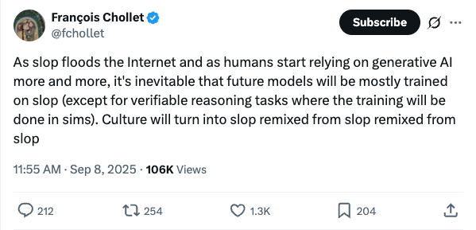
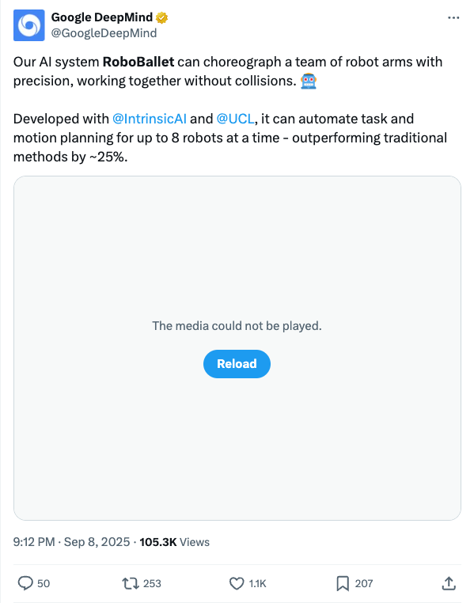
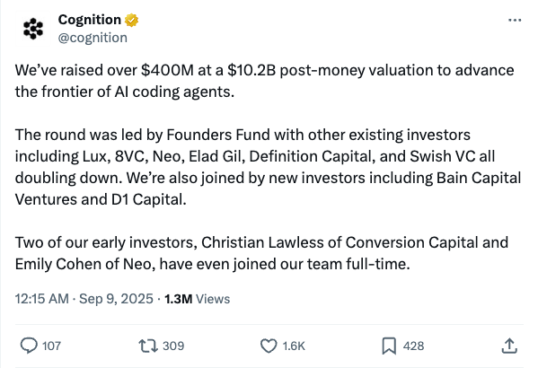
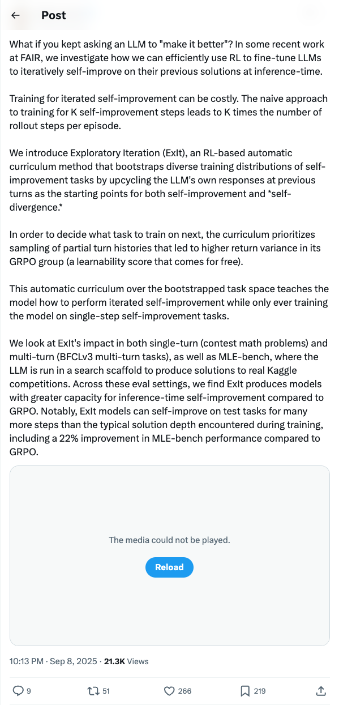
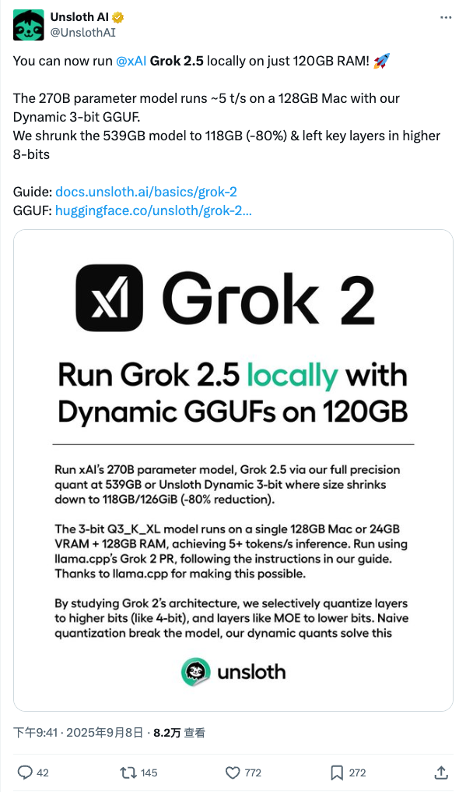
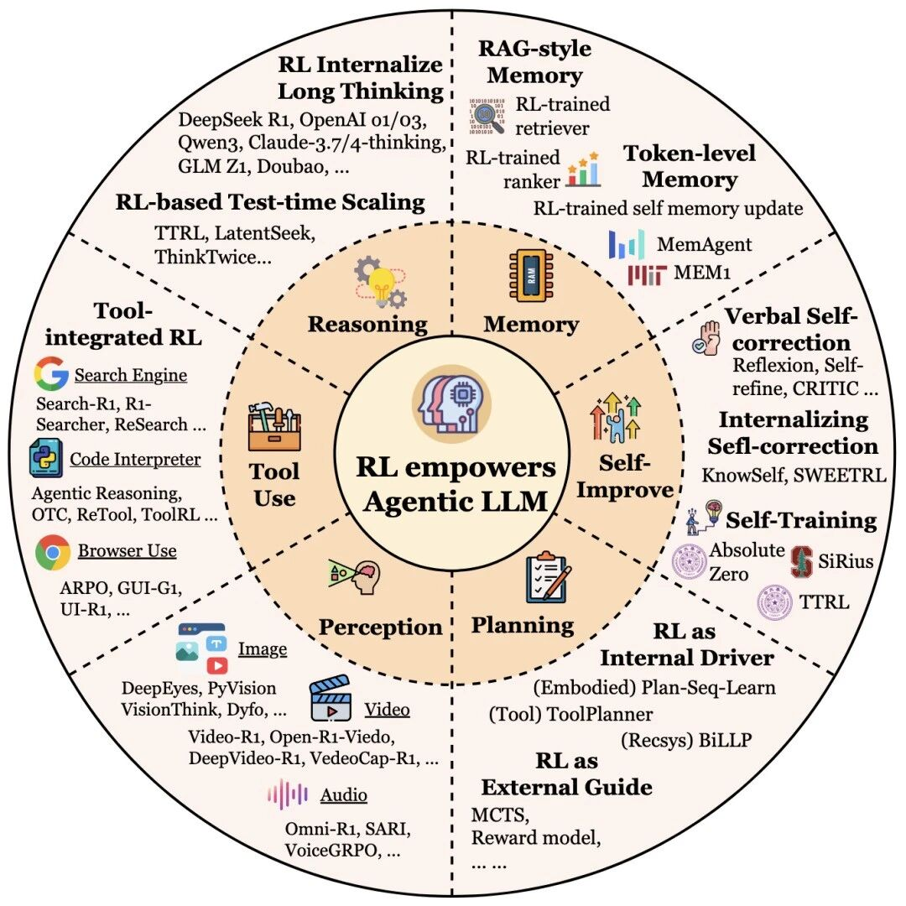
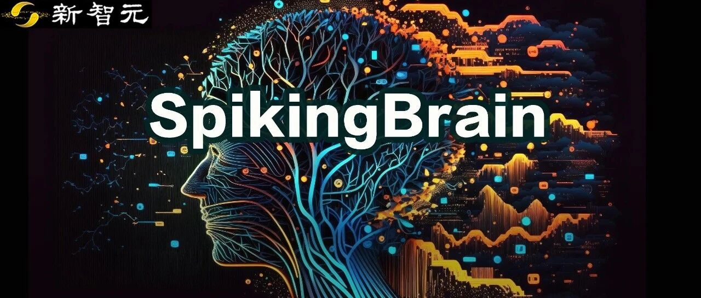
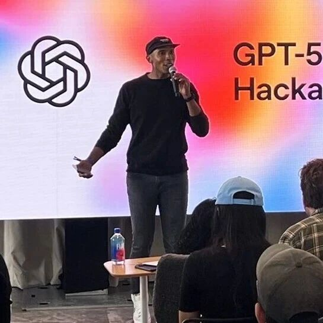
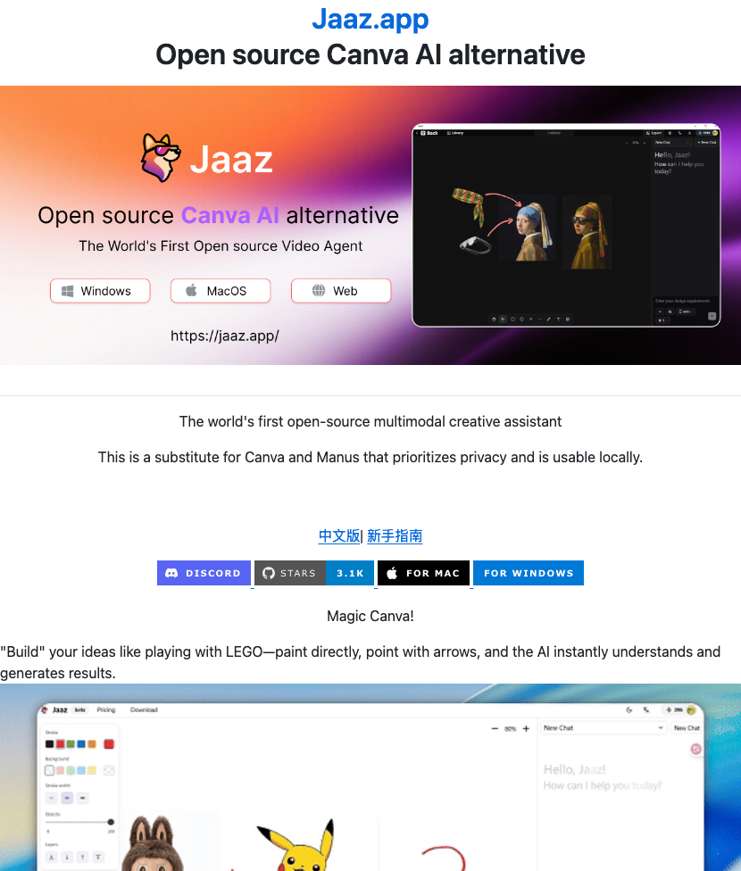
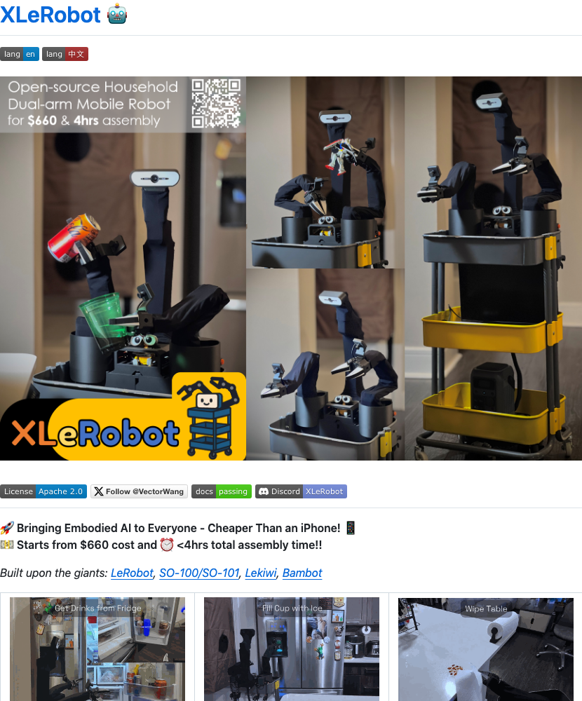

Twitter
googleaidevs_Veo 3 and Veo 3 Fast Generally Available in Gemini API
Published: 2025-09-08T21:10:25.000Z
Google AI Developers announced that their video generation models, Veo 3 and Veo 3 Fast, are now generally available within the Gemini API. Alongside this release, the pricing for both models has been reduced by approximately 50%, and new output formats, including 9:16 vertical and 1080 HD, are now supported. This provides developers with more cost-effective and flexible video generation capabilities.
fchollet_Generative AI's Impact on Future Data and Culture
Published: 2025-09-08T03:55:08.000Z

Prominent AI researcher François Chollet warns that as generative AI content proliferates, the internet will be flooded with low-quality information. He predicts that future AI models will inevitably be trained predominantly on this 'slop,' with only verifiable reasoning tasks potentially being trained in simulated environments. Chollet suggests this trend will lead to human culture being continuously remixed from low-quality content, raising profound concerns about AI data quality and cultural evolution.
GoogleDeepMind_RoboBallet AI System Achieves Robot Collaboration Choreography
Published: 2025-09-08T13:12:53.000Z

Google DeepMind, in collaboration with IntrinsicAI and UCL, has successfully developed an innovative AI system named RoboBallet. This advanced system excels at precisely choreographing a team of up to eight robot arms, enabling them to work together seamlessly without collisions. RoboBallet automates complex task and motion planning, significantly streamlining multi-robot operations. Notably, it demonstrates superior performance, outperforming traditional methods by approximately 25%. This development marks a significant advancement in AI-driven robotics, enhancing efficiency and precision in collaborative robotic tasks.
Cognition_Raises Over $400M at $10.2B Valuation for AI Coding Agents
Published: 2025-09-08T16:15:42.000Z

AI company Cognition announced it has successfully raised over $400 million at a $10.2 billion post-money valuation, aiming to advance the frontier of AI coding agents. The round was led by Founders Fund, with existing investors like Lux, 8VC, and Neo doubling down, and new investors including Bain Capital Ventures and D1 Capital joining. This funding will accelerate their innovation in the AI coding domain.
MinqiJiang_ExIt: An RL Method for LLM Iterated Self-Improvement
Published: 2025-09-08T14:13:32.000Z

Minqi Jiang introduces ExIt, a novel RL-based automatic curriculum method from FAIR, designed to efficiently train LLMs for iterated self-improvement at inference-time. ExIt leverages "self-divergence" by upcycling the LLM's own responses to bootstrap diverse training distributions, enabling multi-step self-improvement from single-step tasks. This approach significantly reduces training costs and demonstrates superior performance over GRPO in contest math, multi-turn tasks, and Kaggle competitions, notably achieving a 22% improvement in MLE-bench.
UnslothAI_Grok 2.5 Local Deployment Optimization and Model Compression
Published: 2025-09-08T13:41:02.000Z

UnslothAI announced that its technology enables efficient local execution of the xAI Grok 2.5 large language model, requiring only 120GB RAM. The 270 billion parameter model achieves approximately 5 tokens/second on a 128GB Mac, utilizing Unsloth's Dynamic 3-bit GGUF technology. This innovation compresses the original 539GB model to 118GB, an 80% reduction, while retaining key layers in higher 8-bit precision to preserve performance.
wechat
Inpaint4Drag: Repurposing Inpainting Models for Drag-Based Image Editing via Bidirectional Warping
Published: 2025-09-08T15:55:57.000Z
The newly open-sourced Inpaint4Drag framework from the University of Hong Kong revolutionizes drag-based image editing. This novel approach decouples complex drag editing into two specialized subtasks: bidirectional warping and standard image inpainting. By employing a pixel-space bidirectional warping algorithm and SAM-based boundary refinement, Inpaint4Drag achieves precise and coherent deformation of image content. A key innovation is its real-time preview capability, which significantly enhances user interaction by allowing iterative refinement of masks and control points before computationally intensive inpainting operations. This addresses the inherent ambiguity of sparse control points in previous methods, leading to more predictable and accurate results. Experimental evaluations demonstrate Inpaint4Drag's superior performance in drag accuracy and image consistency, boasting processing speeds nearly 600 times faster than DragDiffusion while maintaining high-quality inpainting results. Its compatibility with any inpainting model ensures future adaptability and continuous improvement, marking a significant advancement in interactive image manipulation.
The Landscape of Agentic Reinforcement Learning for LLMs: A Survey
Published: 2025-09-08T15:55:57.000Z

A new paradigm, Agentic Reinforcement Learning (Agentic RL), is emerging for Large Language Models (LLMs), shifting from traditional Preference-based Reinforcement Fine-tuning (PBRFT). Agentic RL aims to evolve LLMs from passive alignment to active decision-making agents capable of planning, acting, and continuous learning in dynamic environments. A comprehensive 100-page survey, co-authored by institutions including Oxford and NUS, systematically reviews Agentic RL. It covers its theoretical framework, evolutionary trajectory, six core capabilities (planning, tool use, memory, self-improvement, reasoning, perception), and diverse applications. The survey also discusses future challenges such as trustworthiness, scalability, and complex environments. It emphasizes that Agentic RL is crucial for LLMs to transition from "speaking" to "doing," marking the "second half" of LLM development. This paradigm shift enables LLMs to become more autonomous and versatile, addressing the limitations of previous training methods and paving the way for more robust and interactive AI systems.
Full-Process Domestic GPU, 100x Context Acceleration! Chinese Academy of Sciences Releases 'Linear Complexity' Brain-Inspired Large Model
Published: 2025-09-08T11:28:15.000Z

The team led by Li Guoqi and Xu Bo from the Chinese Academy of Sciences' Institute of Automation has unveiled SpikingBrain (瞬悉)-1.0, a domestically developed and controllable brain-inspired spiking large model. Drawing inspiration from the intricate mechanisms of brain neurons, this model adopts a linear or near-linear complexity architecture, effectively addressing the high computational overhead of traditional Transformer models in processing long sequences. SpikingBrain-1.0 was entirely trained and inferred on domestic GPU platforms, achieving performance comparable to mainstream models with significantly less data. Notably, it demonstrates up to a 100-fold acceleration in ultra-long context processing. This research explores an "endogenous complexity" approach to general intelligence, aiming to construct low-power, high-performance brain-inspired general intelligent computing models. It provides crucial insights for future brain-inspired chip design, with parts of the model already open-sourced to foster ecosystem development.
GPT-5 Revolutionizes Fashion and Revitalizes Excel! OpenAI Hackathon Winners Announced
Published: 2025-09-08T11:28:15.000Z

OpenAI's recent GPT-5 hackathon showcased the immense potential of its latest large language model across diverse applications. The Korean startup Gentoo secured first place with a GPT-5-powered marketing simulation system, enabling businesses to pre-evaluate campaign effectiveness and even predict return rates without real-world financial risk. Other finalist projects demonstrated GPT-5's versatility, including an AI-driven fashion styling platform that combines diffusion models with GPT-5 for 3D avatar makeovers, an intelligent background agent orchestration tool for Excel that automates financial modeling and data interaction, and a knowledge visualization system that transforms complex texts into engaging educational videos. Furthermore, projects featured a GPT-5-based computer use agent capable of automating interactions across various applications and games, and a sophisticated multi-agent system for optimizing power grid operations. These innovative solutions collectively highlight GPT-5's groundbreaking capabilities in multi-domain applications, multimodal processing, and complex task orchestration, signaling a profound integration and transformation of AI across sectors like e-commerce, education, and energy management.
Has Zuckerberg's Big Bet Paid Off? Meta's New Method Accelerates LLM Long-Context Processing by 30x
Published: 2025-09-08T06:20:12.000Z
Meta Superintelligence Labs has introduced REFRAG, an efficient decoding framework designed to address the critical efficiency bottleneck of Large Language Models (LLMs) when processing long context inputs, particularly in Retrieval-Augmented Generation (RAG) applications. The framework significantly reduces the computational overhead of attention mechanisms and KV Cache memory consumption by compressing text into chunk vectors and selectively preserving crucial information. Experimental results demonstrate that REFRAG can accelerate the Time-To-First-Token (TTFT) generation by up to 30.8 times and extend effective context size by 16 times, all while maintaining or even improving model accuracy. This innovation transforms "large-context RAG" from a theoretical concept into a practical reality, offering an efficient solution for LLMs to handle massive amounts of information. While the framework shows promising results, its ultimate value awaits broader validation in real-world applications.
Leading Global Image-to-Video Rankings: How Aishi Technology's PixVerse V5 Transforms Video Creation for 100 Million Users
Published: 2025-09-08T06:20:12.000Z
Aishi Technology's PixVerse V5 model has achieved global first place in image-to-video generation and ranks second in text-to-video, demonstrating its leading position in the AI video generation landscape. Serving over 100 million users worldwide, the product emphasizes "creativity" and user accessibility, exemplified by innovative features like the Agent creation assistant, which simplifies complex prompt design and enables widespread AI video creation. From a technical standpoint, the V5 version delivers significant advancements in intelligent understanding, achieving more accurate command responses and consistency; rapid, seconds-level generation, with some videos created in as little as 5 seconds; and remarkably enhanced realism, thanks to expanded model parameters and high-quality training data. These improvements are underpinned by core innovations such as a unified feature space for multimodal data, extreme diffusion distillation for accelerated generation, and a proprietary DiT architecture. Aishi Technology's commitment to rapid iteration and continuous technological breakthroughs is propelling AI video generation into a new era of widespread and accessible application, empowering ordinary users to effortlessly transform their imaginative ideas into high-quality video content.
GitHub
Finally, LLM agents that actually follow instructions
Published: 2025-09-08T19:25:59Z

Parlant is an innovative AI agent framework designed to address the common challenges of Large Language Model (LLM) agents, such as failing to follow instructions, hallucinating, and exhibiting inconsistent behavior in real-world applications. It ensures reliable execution of predefined tasks and consistent agent conduct by introducing core functionalities like behavioral guidelines, conversational journeys, robust tool integration, domain adaptation, and explainability. This framework is particularly suited for industries demanding high compliance and precision, including financial services, healthcare, e-commerce, and legal tech, enabling developers to build production-ready, predictable, and scalable AI agents.
TARS
Published: 2025-09-08T19:08:21Z

TARS is a comprehensive multimodal AI Agent stack, featuring two core projects: Agent TARS and UI-TARS Desktop. Agent TARS functions as a versatile multimodal AI Agent, extending GUI Agent and Vision capabilities to various environments including terminals, personal computers, web browsers, and integrated products. It provides both a command-line interface (CLI) and a Web UI for user interaction, aiming to streamline task completion through advanced multimodal large language models (LLMs) and seamless integration with real-world Multi-Component Protocol (MCP) tools. UI-TARS Desktop, built upon the UI-TARS model, is a native desktop application offering robust GUI Agent functionalities for both local and remote computer and browser operations. Key features include natural language control, precise screenshot and visual recognition, accurate mouse and keyboard manipulation, cross-platform compatibility, real-time feedback, and secure local processing. This stack is designed to significantly enhance user experience by automating complex interactions and enabling more intuitive control over digital environments.
🚀 Kilo Code
Published: 2025-09-08T21:30:13Z

Kilo Code is an open-source AI agent specifically designed for Visual Studio Code, empowering developers with intelligent code generation from natural language, automated task execution, and sophisticated code refactoring. It integrates directly with state-of-the-art large language models, including Gemini 2.5 Pro, Claude 4 Sonnet & Opus, and GPT-5, offering a seamless AI-powered coding experience without requiring users to manage their own API keys. A key differentiator is its MCP Server Marketplace, which enables easy discovery and integration of extensions to enhance agent capabilities. While building upon the foundations of projects like Roo Code and Cline, Kilo Code has evolved with its own vision, providing unique features such as multi-mode operation (Architect, Coder, Debugger) and assisted commit messages. This comprehensive tool significantly streamlines the software development lifecycle, enhancing productivity and efficiency for programmers.
Jaaz.app
Published: 2025-09-09T03:26:33Z

Jaaz.app is an open-source multimodal creative assistant designed as a privacy-focused, locally runnable alternative to tools like Canva. It offers AI-powered image and video generation, supporting one-prompt creation and prompt-free methods like "Magic Canvas" and "Magic Video." The platform features an infinite canvas for visual storyboarding and integrates a smart AI agent system compatible with both local and cloud models. Key advantages include its local-first, open-source, and no-tracking privacy policy, making it safe for commercial use with full data ownership for users.
Generative AI for Beginners (Version 3) - A Course
Published: 2025-09-08T19:05:54Z

This GitHub repository offers a 21-lesson comprehensive course developed by Microsoft Cloud Advocates, designed to teach how to build Generative AI applications. The curriculum covers foundational concepts of Large Language Models (LLMs), prompt engineering, Retrieval Augmented Generation (RAG), function calling, open-source models, AI agents, and model fine-tuning. It provides code examples in both Python and TypeScript, supporting Azure OpenAI, GitHub Marketplace Model Catalog, and OpenAI API, enabling developers to master the creation of applications for text generation, chat, search, and image generation.
XLeRobot 🤖
Published: 2025-09-09T00:22:16Z

XLeRobot is an open-source, low-cost embodied AI dual-arm mobile robot project designed to democratize embodied AI technology. Starting at approximately $660 with less than 4 hours of assembly time, it offers an economical option for individuals and research institutions. Built upon established projects like LeRobot, it supports various control methods including keyboard, Xbox controller, and Switch Joycon. The project provides comprehensive simulation environments and real-world deployment guides, enabling the robot to perform household tasks. XLeRobot aims to accelerate the adoption and application of embodied AI, making advanced robotics accessible to a wider audience.
huggingface
Why Language Models Hallucinate
Published: 2025-09-04T21:26:31.000Z

Like students facing hard exam questions, large language models sometimes
guess when uncertain, producing plausible yet incorrect statements instead of
admitting uncertainty. Such "hallucinations" persist even in state-of-the-art
systems and undermine trust. We argue that language models hallucinate because
the training and evaluation procedures reward guessing over acknowledging
uncertainty, and we analyze the statistical causes of hallucinations in the
modern training pipeline. Hallucinations need not be mysterious -- they
originate simply as errors in binary classification. If incorrect statements
cannot be distinguished from facts, then hallucinations in pretrained language
models will arise through natural statistical pressures. We then argue that
hallucinations persist due to the way most evaluations are graded -- language
models are optimized to be good test-takers, and guessing when uncertain
improves test performance. This "epidemic" of penalizing uncertain responses
can only be addressed through a socio-technical mitigation: modifying the
scoring of existing benchmarks that are misaligned but dominate leaderboards,
rather than introducing additional hallucination evaluations. This change may
steer the field toward more trustworthy AI systems.
Symbolic Graphics Programming with Large Language Models
Published: 2025-09-05T16:10:53.000Z

Large language models (LLMs) excel at program synthesis, yet their ability to
produce symbolic graphics programs (SGPs) that render into precise visual
content remains underexplored. We study symbolic graphics programming, where
the goal is to generate an SGP from a natural-language description. This task
also serves as a lens into how LLMs understand the visual world by prompting
them to generate images rendered from SGPs. Among various SGPs, our paper
sticks to scalable vector graphics (SVGs). We begin by examining the extent to
which LLMs can generate SGPs. To this end, we introduce SGP-GenBench, a
comprehensive benchmark covering object fidelity, scene fidelity, and
compositionality (attribute binding, spatial relations, numeracy). On
SGP-GenBench, we discover that frontier proprietary models substantially
outperform open-source models, and performance correlates well with general
coding capabilities. Motivated by this gap, we aim to improve LLMs' ability to
generate SGPs. We propose a reinforcement learning (RL) with verifiable rewards
approach, where a format-validity gate ensures renderable SVG, and a
cross-modal reward aligns text and the rendered image via strong vision
encoders (e.g., SigLIP for text-image and DINO for image-image). Applied to
Qwen-2.5-7B, our method substantially improves SVG generation quality and
semantics, achieving performance on par with frontier systems. We further
analyze training dynamics, showing that RL induces (i) finer decomposition of
objects into controllable primitives and (ii) contextual details that improve
scene coherence. Our results demonstrate that symbolic graphics programming
offers a precise and interpretable lens on cross-modal grounding.
LuxDiT: Lighting Estimation with Video Diffusion Transformer
Published: 2025-09-03T19:59:20.000Z

Estimating scene lighting from a single image or video remains a longstanding
challenge in computer vision and graphics. Learning-based approaches are
constrained by the scarcity of ground-truth HDR environment maps, which are
expensive to capture and limited in diversity. While recent generative models
offer strong priors for image synthesis, lighting estimation remains difficult
due to its reliance on indirect visual cues, the need to infer global
(non-local) context, and the recovery of high-dynamic-range outputs. We propose
LuxDiT, a novel data-driven approach that fine-tunes a video diffusion
transformer to generate HDR environment maps conditioned on visual input.
Trained on a large synthetic dataset with diverse lighting conditions, our
model learns to infer illumination from indirect visual cues and generalizes
effectively to real-world scenes. To improve semantic alignment between the
input and the predicted environment map, we introduce a low-rank adaptation
finetuning strategy using a collected dataset of HDR panoramas. Our method
produces accurate lighting predictions with realistic angular high-frequency
details, outperforming existing state-of-the-art techniques in both
quantitative and qualitative evaluations.
LatticeWorld: A Multimodal Large Language Model-Empowered Framework for
Interactive Complex World Generation
Published: 2025-09-05T17:22:33.000Z

Recent research has been increasingly focusing on developing 3D world models
that simulate complex real-world scenarios. World models have found broad
applications across various domains, including embodied AI, autonomous driving,
entertainment, etc. A more realistic simulation with accurate physics will
effectively narrow the sim-to-real gap and allow us to gather rich information
about the real world conveniently. While traditional manual modeling has
enabled the creation of virtual 3D scenes, modern approaches have leveraged
advanced machine learning algorithms for 3D world generation, with most recent
advances focusing on generative methods that can create virtual worlds based on
user instructions. This work explores such a research direction by proposing
LatticeWorld, a simple yet effective 3D world generation framework that
streamlines the industrial production pipeline of 3D environments. LatticeWorld
leverages lightweight LLMs (LLaMA-2-7B) alongside the industry-grade rendering
engine (e.g., Unreal Engine 5) to generate a dynamic environment. Our proposed
framework accepts textual descriptions and visual instructions as multimodal
inputs and creates large-scale 3D interactive worlds with dynamic agents,
featuring competitive multi-agent interaction, high-fidelity physics
simulation, and real-time rendering. We conduct comprehensive experiments to
evaluate LatticeWorld, showing that it achieves superior accuracy in scene
layout generation and visual fidelity. Moreover, LatticeWorld achieves over a
90times increase in industrial production efficiency while maintaining high
creative quality compared with traditional manual production methods. Our demo
video is available at https://youtu.be/8VWZXpERR18
U-ARM : Ultra low-cost general teleoperation interface for robot
manipulation
Published: 2025-09-02T15:39:38.000Z

We propose U-Arm, a low-cost and rapidly adaptable leader-follower
teleoperation framework designed to interface with most of commercially
available robotic arms. Our system supports teleoperation through three
structurally distinct 3D-printed leader arms that share consistent control
logic, enabling seamless compatibility with diverse commercial robot
configurations. Compared with previous open-source leader-follower interfaces,
we further optimized both the mechanical design and servo selection, achieving
a bill of materials (BOM) cost of only \50.5 for the 6-DoF leader arm and
56.8 for the 7-DoF version. To enhance usability, we mitigate the common
challenge in controlling redundant degrees of freedom by %engineering methods
mechanical and control optimizations. Experimental results demonstrate that
U-Arm achieves 39\% higher data collection efficiency and comparable task
success rates across multiple manipulation scenarios compared with Joycon,
another low-cost teleoperation interface. We have open-sourced all CAD models
of three configs and also provided simulation support for validating
teleoperation workflows. We also open-sourced real-world manipulation data
collected with U-Arm. The project website is
https://github.com/MINT-SJTU/LeRobot-Anything-U-Arm.
Bootstrapping Task Spaces for Self-Improvement
Published: 2025-09-04T18:01:00.000Z

Progress in many task domains emerges from repeated revisions to previous
solution attempts. Training agents that can reliably self-improve over such
sequences at inference-time is a natural target for reinforcement learning
(RL), yet the naive approach assumes a fixed maximum iteration depth, which can
be both costly and arbitrary. We present Exploratory Iteration (ExIt), a family
of autocurriculum RL methods that directly exploits the recurrent structure of
self-improvement tasks to train LLMs to perform multi-step self-improvement at
inference-time while only training on the most informative single-step
iterations. ExIt grows a task space by selectively sampling the most
informative intermediate, partial histories encountered during an episode for
continued iteration, treating these starting points as new self-iteration task
instances to train a self-improvement policy. ExIt can further pair with
explicit exploration mechanisms to sustain greater task diversity. Across
several domains, encompassing competition math, multi-turn tool-use, and
machine learning engineering, we demonstrate that ExIt strategies, starting
from either a single or many task instances, can produce policies exhibiting
strong inference-time self-improvement on held-out task instances, and the
ability to iterate towards higher performance over a step budget extending
beyond the average iteration depth encountered during training.